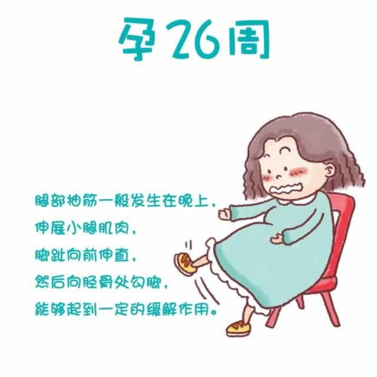

现在，你的孕中期即将结束。宝宝的活动更加频繁了，在他踢腿或转身时，甚至可以看到他的膝盖或肘部将你的腹部顶出一个小包。准妈妈要记得按时数胎动，如果发现异常及时就医。
随着肚子一天天增大，你会感觉即使像弯腰、系鞋带这样简单的动作，做起来会有些费力了。
由于身体负荷继续加重，不断变大的子宫压迫直肠，你的便秘在近期可能更加频繁出现。坚持适当的运动，每天喝足量的水并多吃一些富含纤维素的食品，如粗粮食品、豆类食品以及新鲜蔬菜水果等都将有助于减少便秘的发生。如果在便秘的同时伴随有腹部疼痛、排出黏液护着有出血，则建议你马上去医院做检查。